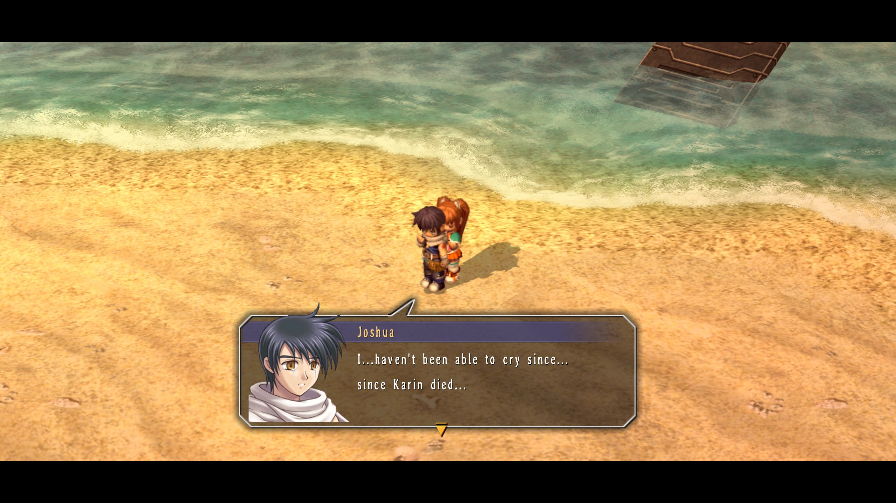

Confession Reflection
Trails in the Sky Posts
Joshua Bright
S.1207/12/20
Hello, blog. It's me, Joshua.
It's been a hot minute since I've wrote
something here.
Not much has changed after the family
vacation I had with my dad, my sister, and my
girlfriend, Estelle.
Speaking of Estelle...
I've been looking back at the confession that
happened between us way back when, after I
found out that I was a part of Ouroboros,
and didn't want Estelle to follow me.

"My Estelle.. You shine like the sun."
Ever since that night, I've always expressed
deep regret and remorse for leaving her like
that.. and so suddenly, too.
I didn't mean to leave her that night.
It must've hurt her to let her do everything
at home without me there.. by her side.
.jpg)
"...I want you to know that I'll always be thinking of you."
And ever since that night, I was always
thinking of her, especially on my journey to
seek out the Society.
However, as I was on my journey to seek out
the Society, later to be known as Ouroboros,
Estelle managed to find me later on in the
journey, somehow.
I had to get away from her as best as I can,
and as fast as I can, too.
I didn't want her to get hurt, or get in my way
of finding the Society and taking them down.
Later on down the line, however, Estelle found
me again, but this time, as I was with Josette
and a few others.
As we talked, however, she saw through my
self-pity, and told me I wasn't broken, and
that I was scared of losing someone else I loved.
"You're just scared, mostly because you care for people so much it breaks your heart... and you're lying to yourself about it."
And she was right..
I was scared.
I was scared of losing more people I love and
care about.. especially Estelle.
Little did I know, though..
The next moment, she hugged me from behind.
And told me...
"Let's go foward together from now on and protect each other. Equally."
I started crying afterwards. I wasn't able to cry tears ever since my sister, Karin, died.
From that moment on, we went on many adventures together. And overcame so much throughout our time together. And I'm so, so grateful to have Estelle in my life now, and hopefully forever.